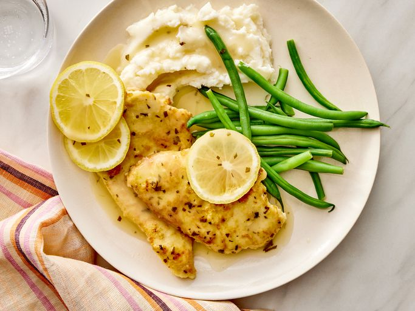

Chicken Francese Recipe

This chicken francese recipe is easy and delicious. It's great over pasta or rice or with a side of your favorite vegetable.
Ingredients:
- ½ cup all-purpose flour
- 4 large eggs, beaten
- 1 pound skinless, boneless chicken breast halves
- 2 tablespoons olive oil, or as needed
- 2 cups chicken broth
- ½ cup white wine
- ¼ cup butter
- 2 medium lemons, juiced
- 1 teaspoon chopped fresh parsley
- salt and pepper to taste
- 2 teaspoons water
- 1 teaspoon cornstarch
- Gather all ingredients.
- Dredge chicken in flour; shake off excess. Dip into beaten egg. Lift up so excess egg drips back into the bowl. Press into flour again to coat both sides. Repeat with remaining chicken.
- Heat oil in a nonstick skillet over medium heat. Add chicken and sauté until almost cooked through, about 4 minutes per side. Transfer to a paper towel-lined plate.
- Preheat the oven to 300 degrees F (150 degrees C). Grease a 9x13-inch baking dish.
- Heat chicken broth, wine, butter, lemon juice, parsley, salt, and pepper in a medium saucepan over medium-low heat, stirring occasionally, until butter melts. Stir water and cornstarch together in a small bowl until combined; add to broth mixture and cook until it thickens slightly, 2 to 3 minutes.
- Place chicken into the prepared baking dish and pour sauce over top.
- Bake in the preheated oven until chicken is no longer pink in the center and the juices run clear, 10 to 15 minutes. An instant-read thermometer inserted into the center should read at least 165 degrees F (74 degrees C).